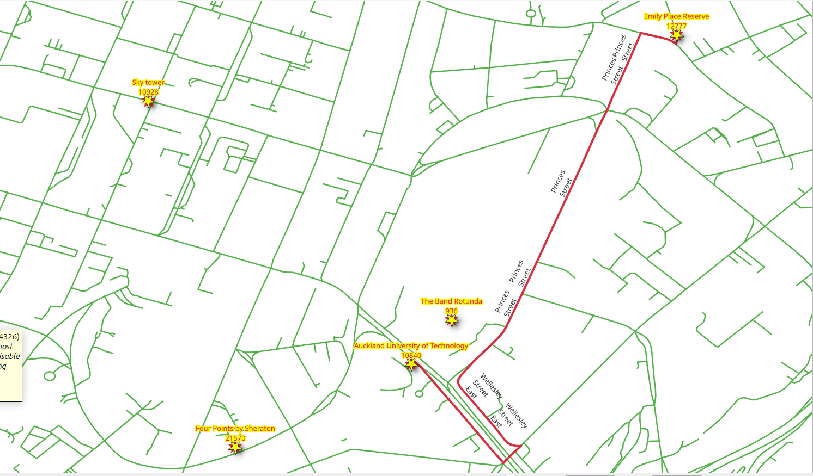
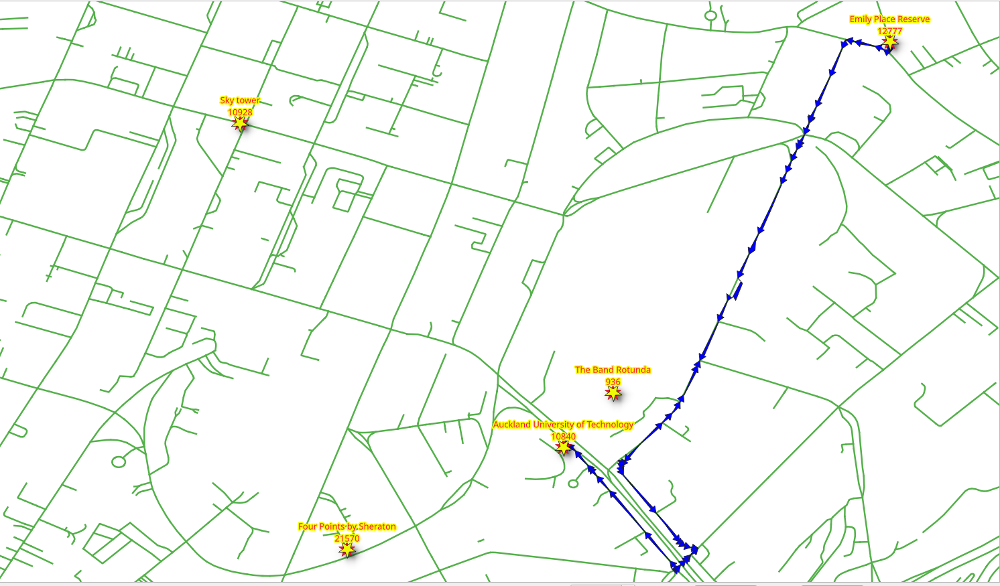

5. Función SQL¶
{kind=link}
Las funciones pgRouting proporcionan una interfaz de bajo nivel.
Al desarrollar para una aplicación de nivel superior, los requisitos deben estar representados en las consultas SQL. A medida que estas consultas SQL se vuelven más complejas, es conveniente almacenarlas en funciones o procedimientos almacenados de postgreSQL. Los procedimientos o funciones almacenados son una forma eficaz de envolver la lógica de la aplicación, en este caso, relacionada con la lógica y los requisitos de ruteo.
5.1. The function requirements¶
The function will wrap pgr_dijkstra.
The function needs to work on any of the networks designed:
vehicle_nettaxi_net
The function needs to return the following routing information:
seq- Un identificador único de las filasid- El identificador del segmentoname- El nombre del segmentolength- La longitud del segmentoseconds- Cantidad de segundos para atravesar el segmentoazimuth- El azimut del segmentoroute_geom- La geometría de la rutaroute_readable- La geometría en forma legible para humanos.
Diseño de la función
La función wrk_dijkstra se creará con los siguientes parámetros de entrada y columnas de salida:
Parámetros de entrada
Parameter |
Tipo |
Descripción |
|---|---|---|
|
REGCLASS |
La tabla/vista que se utilizará para procesar |
|
BIGINT |
The identifier of the departure location. |
|
BIGINT |
The identifier of the destination location. |
columnas de salida
Nombre |
Tipo |
Descripción |
|---|---|---|
|
INTEGER |
Un único número para cada fila de resultados. |
|
BIGINT |
El identificador de arista. |
|
TEXT |
El nombre del segmento. |
|
FLOAT |
El número de segundos que se tarda en atravesar el segmento. |
|
FLOAT |
Longitud en metros del segmento. |
|
FLOAT |
El azimuth del segmento. |
|
TEXT |
La geometría en forma humanamente legible. |
|
geometry |
La geometría del segmento en la dirección correcta. |
5.2. Manipulación de la información adicional¶
Cuando la aplicación necesita información adicional, como el nombre de la calle, JOIN los resultados con otras tablas.
5.2.1. Ejercicio 1: Obtener información adicional¶
Problema
Desde Emily Place Reserve hasta Auckland University of Technology
Obtener la siguiente información:
seqidnamesecondslength
Solución
The function returns the columns asked. (line 4)
Rename
pgr_dijkstraresults to application requirements names. (line 12).LEFT JOINthe results withvehicle_netto get the additional information. (line 17)Tiene que ser
LEFTporque hay una fila conid = -1que no existe envehicle_net
Test from |ch7_id_1| to |ch7_id_2| on
vehicle_net. (Last line)
1-- DROP FUNCTION wrk_dijkstra(regclass, bigint, bigint);
2
3CREATE OR REPLACE FUNCTION wrk_dijkstra(
4 IN edges_subset REGCLASS, IN source BIGINT, IN target BIGINT,
5 OUT seq INTEGER, OUT id BIGINT, OUT seconds FLOAT, OUT name TEXT, OUT length FLOAT
6)
7RETURNS SETOF record AS
8$BODY$
9SELECT
10seq, id, seconds, name, length
11FROM (
12 SELECT seq, edge AS id, node, cost AS seconds
13 FROM pgr_dijkstra(
14 'SELECT * FROM ' || $1,
15 source, target)
16) AS results
17LEFT JOIN vehicle_net USING (id)
18ORDER BY seq;
19$BODY$
20LANGUAGE SQL;
21
22SELECT * FROM wrk_dijkstra('vehicle_net', , );
CREATE FUNCTION
5.3. Manejo de geometría¶
Desde el punto de vista de pgRouting, la geometría es parte de la información adicional, necesaria en los resultados para una aplicación. Por lo tanto JOIN los resultados con otras tablas que contienen la geometría y para su posterior procesamiento con funciones de PostGIS.
5.3.1. Ejercicio 2: Geometría de la ruta (legible para humanos)¶

Problema
Ruteo desde Emily Place Reserve hasta Auckland University of Technology
Además del ejercicio anterior, obtener
la geometría
geomen forma legible por humanos denominado comoroute_readable
Solución
The function returns
route_readable. (line 6)The routing query named
resultsin a WITH clause. (line 11)The
geomprocessed withST_AsTextto get the human readable form. (line 19).Test from |ch7_id_1| to |ch7_id_2| on
vehicle_net. (Last line)
1DROP FUNCTION wrk_dijkstra(regclass, bigint, bigint);
2
3CREATE OR REPLACE FUNCTION wrk_dijkstra(
4 IN edges_subset REGCLASS, IN source BIGINT, IN target BIGINT,
5 OUT seq INTEGER, OUT id BIGINT, OUT seconds FLOAT, OUT name TEXT, OUT length FLOAT,
6 OUT route_readable TEXT
7)
8RETURNS SETOF record AS
9$BODY$
10WITH
11results AS (
12 SELECT seq, edge AS id, node, cost AS seconds
13 FROM pgr_dijkstra(
14 'SELECT * FROM ' || $1,
15 source, target)
16)
17SELECT
18 seq, id, seconds, name, length,
19 ST_AsText(geom)
20FROM results
21LEFT JOIN vehicle_net USING (id)
22ORDER BY seq;
23$BODY$
24LANGUAGE SQL;
25
26SELECT seq, route_readable FROM wrk_dijkstra('vehicle_net', , );
DROP FUNCTION
CREATE FUNCTION
5.3.2. Ejercicio 3: Geometría de ruta (formato binario)¶
{kind=link}
Problema
Ruteo desde Emily Place Reserve hasta Auckland University of Technology
Además del ejercicio anterior, obtener
geomen formato binario con el nombreroute_geom
Solución
The function returns
route_geom. (line 7)The geometry
geomof the segments (line 21)Test from |ch7_id_1| to |ch7_id_2| on
vehicle_net. (Last line)
1DROP FUNCTION wrk_dijkstra(regclass, bigint, bigint);
2
3CREATE OR REPLACE FUNCTION wrk_dijkstra(
4 IN edges_subset REGCLASS, IN source BIGINT, IN target BIGINT,
5 OUT seq INTEGER, OUT id BIGINT, OUT seconds FLOAT, OUT name TEXT, OUT length FLOAT,
6 OUT route_readable TEXT,
7 OUT route_geom geometry
8)
9RETURNS SETOF record AS
10$BODY$
11WITH
12results AS (
13 SELECT seq, edge AS id, node, cost AS seconds
14 FROM pgr_dijkstra(
15 'SELECT * FROM ' || $1,
16 source, target)
17)
18SELECT
19 seq, id, seconds, name, length,
20 ST_AsText(geom),
21 geom
22FROM results
23LEFT JOIN vehicle_net USING (id)
24ORDER BY seq;
25$BODY$
26LANGUAGE SQL;
27
28SELECT seq, route_geom FROM wrk_dijkstra('vehicle_net', , );
DROP FUNCTION
CREATE FUNCTION
5.3.3. Ejercicio 4: Direccionalidad de la geometría de la ruta¶

Visualmente, con la ruta mostrada con flechas, se puede ver que hay flechas que no coinciden con la direccionalidad de la ruta.
Para tener una direccionalidad correcta, el punto final de una geometría debe coincidir con el punto inicial de la geometría siguiente
Inspeccionando el detalle de los resultados de Ejercicio 2: Geometría de la ruta (legible para humanos)
WITH
results AS (
SELECT seq, id, route_geom
FROM wrk_dijkstra('vehicle_net', , )
),
compare AS (
SELECT seq, id, lead(seq) over(ORDER BY seq) AS next_seq,
ST_AsText(ST_endPoint(route_geom)) AS id_end,
ST_AsText(ST_startPoint(lead(route_geom) over(ORDER BY seq))) AS next_id_start
FROM results
ORDER BY seq)
SELECT * FROM compare WHERE id_end != next_id_start;
Problema
Ruteo desde Emily Place Reserve hasta Auckland University of Technology
Para arreglar la direccionalidad de las geometrías del ejercicio anterior
geomen forma legible por humanos nombrado comoroute_readablegeomen formato binario con el nombreroute_geomAmbas columnas deben tener la geometría corregida para la direccionalidad.
Solución
Para obtener la dirección correcta, algunas geometrías deben invertirse:
Reversing a geometry will depend on the
nodecolumn of the query to Dijkstra.Una instrucción condicional
CASEque devuelve la geometría en forma legible por humanos:Of the geometry when
nodeis thesourcecolumn.Of the reversed geometry when
nodeis not thesourcecolumn.
Una instrucción condicional
CASEque devuelve:The geometry when
nodeis thesourcecolumn.The reversed geometry when
nodeis not thesourcecolumn.
1DROP FUNCTION wrk_dijkstra(regclass, bigint, bigint);
2
3CREATE OR REPLACE FUNCTION wrk_dijkstra(
4 IN edges_subset REGCLASS, IN source BIGINT, IN target BIGINT,
5 OUT seq INTEGER, OUT id BIGINT, OUT seconds FLOAT, OUT name TEXT, OUT length FLOAT,
6 OUT route_readable TEXT,
7 OUT route_geom geometry
8)
9RETURNS SETOF record AS
10$BODY$
11WITH
12results AS (
13 SELECT seq, edge AS id, node, cost AS seconds
14 FROM pgr_dijkstra(
15 'SELECT * FROM ' || $1,
16 source, target)
17)
18SELECT
19 seq, id, seconds, name, length,
20 CASE
21 WHEN node = source THEN ST_AsText(geom)
22 ELSE ST_AsText(ST_Reverse(geom))
23 END,
24
25 CASE
26 WHEN node = source THEN geom
27 ELSE ST_Reverse(geom)
28 END
29FROM results
30LEFT JOIN vehicle_net USING (id)
31ORDER BY seq;
32$BODY$
33LANGUAGE SQL;
34
35SELECT seq, route_readable FROM wrk_dijkstra('vehicle_net', , );
DROP FUNCTION
CREATE FUNCTION
Inspecting the problematic rows, the directionality has been fixed.
WITH
results AS (
SELECT seq, id, seconds, route_geom
FROM wrk_dijkstra('vehicle_net', , )
),
compare AS (
SELECT seq, id, lead(route_geom) over(ORDER BY seq) AS next_id,
ST_AsText(ST_endPoint(route_geom)) AS id_end,
ST_AsText(ST_startPoint(lead(route_geom) over(ORDER BY seq))) AS next_id_start
FROM results
ORDER BY seq)
SELECT * FROM compare WHERE id_end != next_id_start;
5.3.4. Ejercicio 5: Uso de la geometría¶

Hay muchas funciones de geometría en PostGIS, el taller ya cubrió algunas de ellas como ST_AsText, ST_Reverse, ST_EndPoint, etc. Este ejercicio hará uso de una función adicional ST_Azimuth.
Problema
Modificar la consulta del ejercicio anterior
Additionally obtain the azimuth in degrees of the corrected geometry.
Solución
The function returns
aximuth. (line 8)The query from previous exercise is wrapped under additional subquery. (line 18)
The
azimuthis processed in degrees. (line 35).Test from |ch7_id_1| to |ch7_id_2| on
vehicle_net. (Last line)
1DROP FUNCTION wrk_dijkstra(regclass, bigint, bigint);
2
3CREATE OR REPLACE FUNCTION wrk_dijkstra(
4 IN edges_subset REGCLASS, IN source BIGINT, IN target BIGINT,
5 OUT seq INTEGER, OUT id BIGINT, OUT seconds FLOAT, OUT name TEXT, OUT length FLOAT,
6 OUT route_readable TEXT,
7 OUT route_geom geometry,
8 OUT azimuth FLOAT
9)
10RETURNS SETOF record AS
11$BODY$
12WITH
13results AS (
14 SELECT seq, edge AS id, node, cost AS seconds
15 FROM pgr_dijkstra(
16 'SELECT * FROM ' || $1,
17 source, target)),
18additional AS (
19 SELECT
20 seq, id, seconds, name, length,
21 CASE
22 WHEN node = source THEN ST_AsText(geom)
23 ELSE ST_AsText(ST_Reverse(geom))
24 END AS readable,
25
26 CASE
27 WHEN node = source THEN geom
28 ELSE ST_Reverse(geom)
29 END AS geom
30 FROM results
31 LEFT JOIN vehicle_net USING (id)
32 ORDER BY seq)
33
34SELECT *,
35 degrees(ST_azimuth(ST_StartPoint(geom), ST_EndPoint(geom))) AS azimuth
36FROM additional ORDER BY seq;
37$BODY$
38LANGUAGE SQL;
39
40SELECT seq, azimuth FROM wrk_dijkstra('vehicle_net', , );
DROP FUNCTION
CREATE FUNCTION
5.3.5. Exercise 6: Using the function¶
Pruebe la función con una combinación de los lugares interesantes:
10840Auckland University of Technology936The Band Rotunda21570Four Points by Sheraton10928Sky tower12777Emily Place Reserve
Using different networks:
vehicle_nettaxi_netwalk_net
Nombres de las calles de la ruta
SELECT DISTINCT name
FROM wrk_dijkstra('vehicle_net', , );
Total de segundos pasados en cada calle
SELECT name, sum(seconds)
FROM wrk_dijkstra('taxi_net', , )
GROUP BY name;
Why it does not fully work with walk_net?
SELECT *
FROM wrk_dijkstra('walk_net', , );